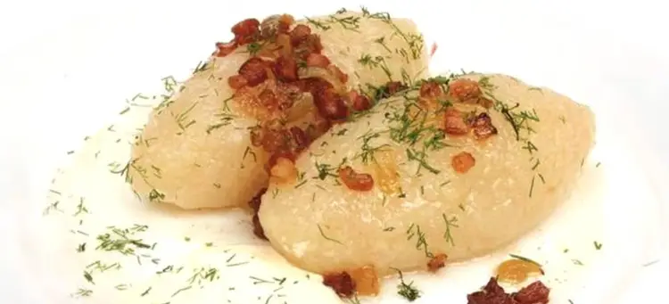

Cepelinai

Sorry for my english, as these chewy potato ball's are not native to english speaking countries neither recipe will be grammar wonder.
This tasty meal called -Cepelinai is national dish of small country - Lithuania.
"Lithuana aa whaat? You can read more if you click on me!"
In order to make Cepelinai one ingredient is the ultimate key. You have to have starchy potatoes and special grounder for them.
If you don't have those maybe it is better to find local Lithuanian restaurant or plan vocation in lithuania!
Shopping list
For the meat filling:
- 1 pound ground pork, or an equal mix of pork, beef, and veal
- 1 medium onion, peeled and finely chopped
- 1 1/2 teaspoons salt
- 1/4 teaspoon freshly ground black pepper
- 1 large egg, beaten
-
For the dumpling:
- 8 large Idaho potatoes, peeled and finely grated, about 5 pounds
- 2 large Idaho or Russet potatoes, about 1 1/2 pounds, peeled, boiled, and riced
- 1 1/2 teaspoons kosher salt, more as needed
- 1 tablespoon cornstarch
For the gravy:
- 2 pound bacon, diced
- 1 large onion, coarsely chopped
- 1 cup sour cream
- Freshly ground black pepperand dill to taste
Directions
- Wash potatoes. Place 1/3 of the un-peeled potatoes in a pot, cover with cold water, and bring to boil. Boil for 15 minutes or until tender. Drain then cool slightly until able to handle; peel. Put the potatoes through a potato ricer or food mill or mash them until very smooth. Set aside.
- Meanwhile as potatoes cook and cool, prepare the filling by mixing the meat with very finely chopped onion. Mix together well. Set aside in refrigerator until ready to use.
- Peel the remaining raw potatoes and very finely grate them using the finest side of a box grater or an electric potato grater. Line a bowl with cheesecloth or a clean cotton towel, dump in the grated potatoes. Use cloth to squeeze out all the juice into a small bowl; reserve juices. Allow the juice to sit aside for 5 minutes; it will start to separate and the heavier potato starch will drop to the bottom. Reserve for use in the next step.
- In a mixing bowl add the riced/mashed potatoes, the squeezed raw potatoes, salt and the 1 Tablespoon dry potato starch. Now pour off the top watery potato juice slowly from the bowl you squeezed the juices into; you should see a wet potato starch in the bottom of the dish; add this starch to the potato mix, too. (The dry and wet potato starches bind the mixture together.) Mix together well.
- Bring a large pot of water to boil. Add a pinch of salt
- Divide potato mix into 6 parts. Taking one, shape it into a flat patty in the palm of your hand, then add a tablespoon of the filling to the middle, bring up the edges of the potato patty to completely enclose the filling, pinch and shape into an oval or round dumpling. Repeat with the other 5 pieces of potato mixture.
- Put in half or all of the cepelinai, depending on the diameter of the pot; boil for 15 to 20 minutes (until filling is thoroughly cooked), stirring gently and occasionally. Remove with slotted spoon to serving plate. Top with onion sauce (below), crumbled bacon, sour cream, dill.
- For the sauce: Dice onion. Heat 2 Tablespoons butter and 2 Tablespoons bacon grease or oil in a frying pan. Add onion, season with salt and pepper, if desired. and saute about 5 to 7 minutes or until golden and translucent.
- Spoon sauce over cepelinai, top with dollop of sour cream and the bacon bits, chopped fresh dill and parsley if desired.
To Main page